Reverse Engineering and Replacing an Industrial 7-Segment Display - Part 1, Research
Building one-off hardware is one part inventing, one part dissecting, one part scrounging. When we try to hit that magic mixture of good, fast, and cheap, so often we must rely on prebuilt modules - if we're trying to build a widget that gets us from zero to 100, it may only be financially/temporarily/technologically reasonable if someone already makes a module that gets us from 0 to 80. Utilizing economies of scale of already-developed parts can bring a one-off project from the realm of fantasy into feasibility. Often, the solution is to develop a chain of off-the-shelf components that can fulfill the end goal.
But all components have a service life, and a manufacturing lifetime. And when your part goes out of production and then your spares-bin runs dry, sometimes keeping your machine running requires some deeper problem solving. When you work in the public-facing technology sphere (theatre, museum work, retail displays, etc), a lot of the solutions are literally one-of-a-kind, even if they're constructed from commercial parts.
I recently had the need to replace a very specific module in some equipment. While it didn't end up being the most high-tech/high speed/highfalutin bit of technology, it presents a good opportunity to talk through how one can approach an unknown part, come to understand its workings, and develop a replacement. So in this N-part series, we'll look at the process of researching, developing, and implementing a custom one-off solution to a failed part in a unique piece of gear.
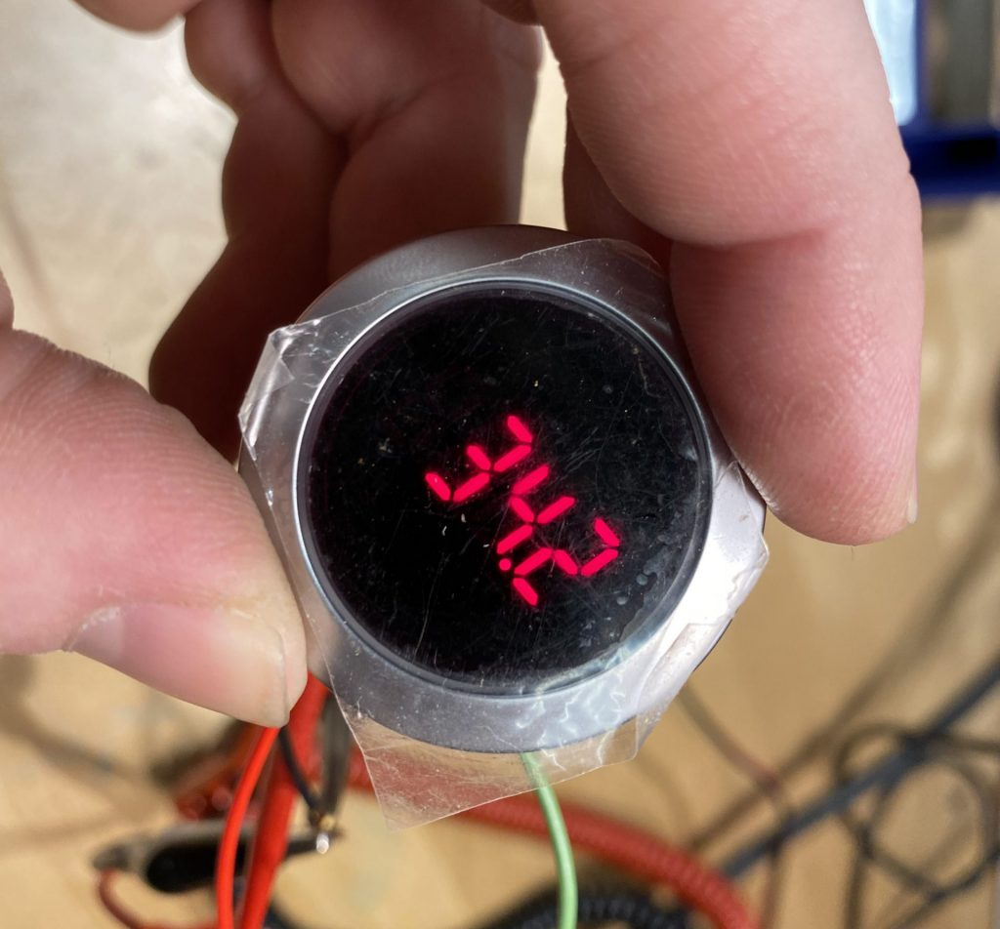
The Lascar EM32-4-LED is a four-digit seven-segment panel mount LED display meant for general-purpose data display. Its small digit size (.39" tall), machined aluminum housing, small footprint (32.5mm diameter punchout) and NEMA 4X/IP67 made it a compact choice for anyone needing to display a single value with 4 digits of precision. It also had the ability to drive four external LEDs, for additional status or process indicators.

A piece of equipment I've been working on recently had just such a LASCAR display installed a few years back to serve as a timer. I''m going to have to be a little vague about the specifics of the equipment itself, but since this post is focused on technical process and not the piece itself, I think I can safely share enough details for the following to make sense:
The piece is an interactive object that triggers some actions and servos, demonstrates a physical phenomenon, and then takes about 25 seconds to cool back down before can be used again. The user is presented with a green illuminated button to activate the system - when the system is in active or cooling down, the illuminated button turns red. But because it's not entirely clear from the action of the device alone when it will be cool enough for use, a countdown timer (two digits) is displayed on the EM32 display, counting the number of seconds until we're good to run again.
Sadly, this particular EM32 display died shortly after LASCAR decided the product hit its End of Life. What's more, I'm currently without the ability to modify the programming of the PLC that's driving the whole shebang. In order to maintain the functionality of the piece, it became necessary to build a device that would ingest the existing signals being sent by the PLC, interpret them, and drive a newly crafted 7-segment display of some kind.
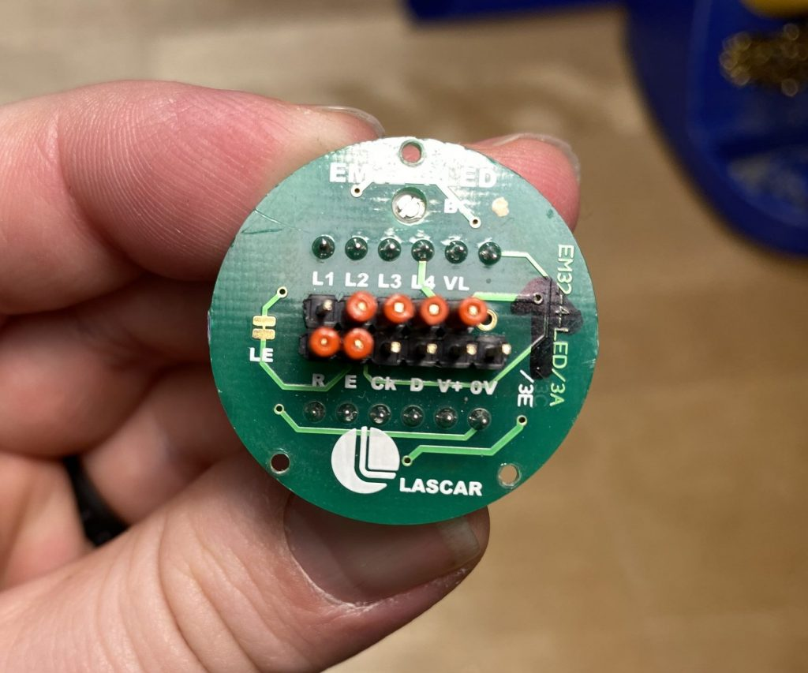
The 'datasheet' for the EM32-4 is a paltry 2 pages long. Presumably there was additional documentation provided to those who were using the device, but since it's now EOL, that documentation seems to be unobtanium. But the existing pair of pages does contain some useful information.
We'll start at the very beginning (a very good place to start): the opening prose paragraph:
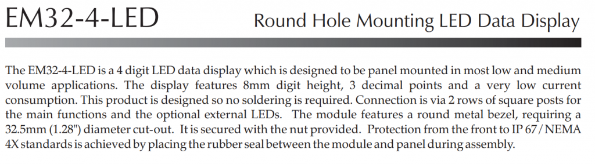
This is where we find a high-level overview of the part, it's intended purpose, and (sometimes) explanations of the differences between any variants of the part. Say, for example, a given part is made in a standard and a mil-spec version, or a normal and a slew-rate limited version, a manufacturer will often encompass them in a single datasheet. It's important to identify specifically what part you have, so you can characterize it accurately.
In our case, the EM32-4 is unique enough that there are no major variants. The paragraph mostly tells us what we already know - it's a 4-digit, 3 decimal point display in a metal bezel. But it does call out the "optional external LEDs." While it's unclear at this point exactly what this means, it's useful to make note of these surprises early on, as they'll often explain a what-the-heck-is-that moment late in the datasheet.
Moving on then to the next useful block in just about any datasheet; the electrical specifications. This is where you'll find input-voltage ranges for power and signals, output voltages and timing, and other device-specific characteristics (transistor beta and voltage spreads, op-amp gain and slew rate, power ratings, etc). If I was doing a Double Dare Physical Challenge and had to utilize a part with only one table of its datasheet available, I'd take the electrical specs chart 9 out of 10 times.
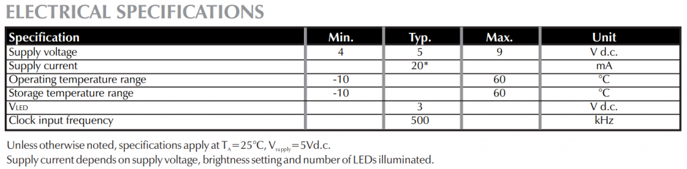
In our case, there's only 6 lines, but 6 important lines they are. We learn that this is a 5V part, but can run at up to 9V so we can't assume we'll have 5V power available. Nominal power usage is ~20mA, so the power available on existing supply lines may be limited. The operating and storage temperature ranges are typical. VLED is a a bit confusing - does this refer to the display itself, in which case we have no real purpose for this voltage? Or perhaps it refers to the voltage available for the external LEDs.
The final line is promising - that the typical clock input frequency is 500KHz. This is the first we've seen any information about how this device receives communication from a controller. But now we know it's some kind of clocked input (perhaps sometime like SPI?), and that its possible frequency is not unreasonable from something we might interpret with off-the-shelf hardware. Not that 500KHz is a stroll in the park, but it's not in the many-megahertz range, say.
The last really useful part of the datasheet is the Functional Block Diagram. This block shows a symbolic representation of what's happening inside the device, as an aid to the user in visualizing what's happening on the interior and how we need to interface with it. You really only see this with integrated circuits or other modules (the functional bock diagram of a transistor would be... just a transistor).
To highlight the purpose of the block diagram, let's do a quick comparison between two drawings on another part: the venerable 555 Timer IC. Its datasheet sports both a schematic diagram and a functional diagram; here are the two side-by-side:
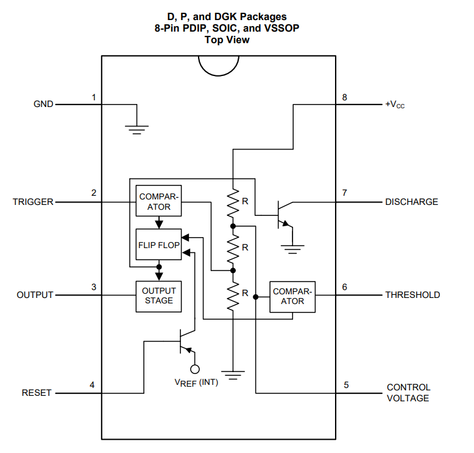
This demonstrates pretty clearly the distinct purposes of the schematic diagram versus the functional one. The functional diagram is there to give users a high-level understanding of how the device functions, where inputs and outputs attach, and what the essential parts of the device are. The schematic diagram is there for those who need to really drill into exactly how the chip is built, because of some precise technical reason. When I'm driving a car, I need to know whether the transmission is manual or automatic, two-wheel vs four wheel, and so on - a functional understanding is enough. A mechanic needs a schematic showing the various linkages and gears of my transmission to diagnose and repair issues; holding that level of information in my head all the time would get in the way of the business of driving around.
With that diversion hopefully making clear the purpose of the functional block diagram, let's check out the one for the EM32-4.
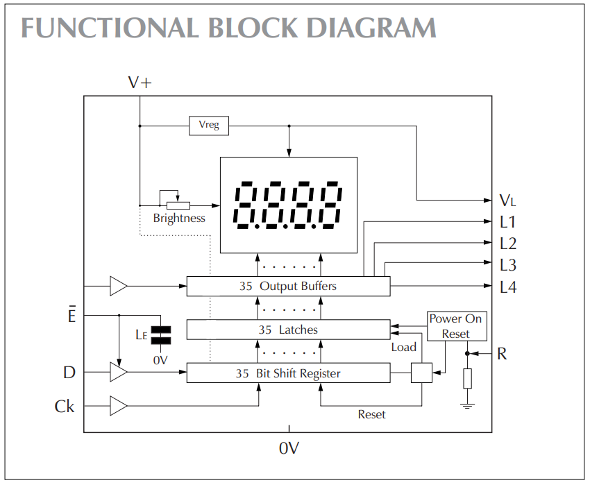
There's some really good info here! Let's start with the external connections:
- We could have guessed V+ and 0V are supply voltage and ground, but this confirms it.
- The 35-bit shift register is intriguing, and illuminates the purpose of the D (Data) and Ck (Clock) terminals. There's also an Ē (enable) pin for the data line which is active low (indicated by the bar over the pin name, for "not").
- Since we don't have direct control over the latches or buffer layer of the shift register, it seems that data will be shown as soon as its clocked in.
- There's a weird hanging inverter on the left side of the diagram attached to the output buffers, as if there was some kind of external buffer control possible at some point. How odd.
- It seems that the VL pin is on the downstream side from the voltage regulator, so it probably puts out the 3 volts listed under electrical specifications above.
- This probably means that L1 thru L4 are open-collector outputs, so we have a sense of how we might use the part to drive the external LEDs.
- Finally, there's a Reset pin for soft-resetting the data displayed - this would be useful if the end product was configured so the displayed retained power when the controller turned off - the controller could simply reset the display (or many displays in parallel) to ensure that no data was present for a fresh start.
One of the starting placing for replacing this display was the possibility that there might be some driver circuitry driving a generic 7-segment display. If the display itself was still good, perhaps we can simply replace the driver and have a visually identical display. Those hopes were dashed, however, when I opened up the EM32-4 LED to find...
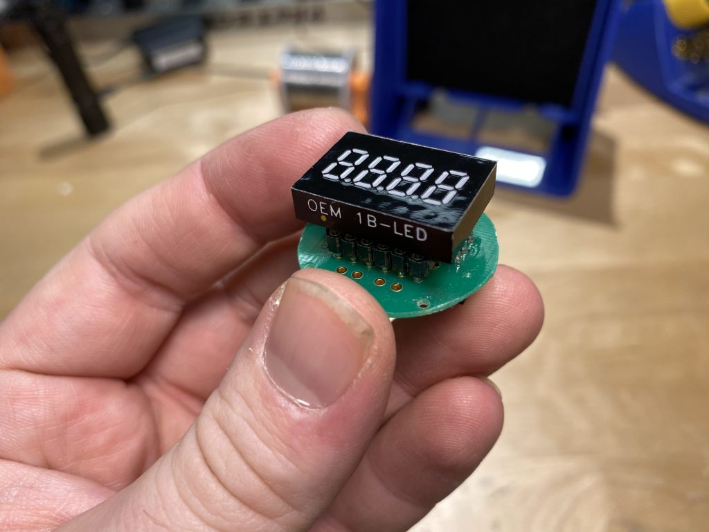
An OEM 4-LED - the power behind the throne - it's the same product, right down to the block diagram, but in a DIP-style package. The EM32-4, it turns out, is the OEM-4 with a nice aluminum case and terminal blocks. And the back of the OEM-4 is epoxy-blobbed together, so even if we were to break into the thing, there's a good chance everything is wirebonded all the way to nowhere and back. Reusing the display on this thing is a non-starter.
All is not in vain, however - the OEM-4's datasheet is a whopping four pages to the EM32's paltry two. The first two pages are essentially identical (which makes sense, since one is the other in a very real way), but the two additional pages in the OEM-4's datasheet have four additional juicy diagrams. Starting with a timing diagram:
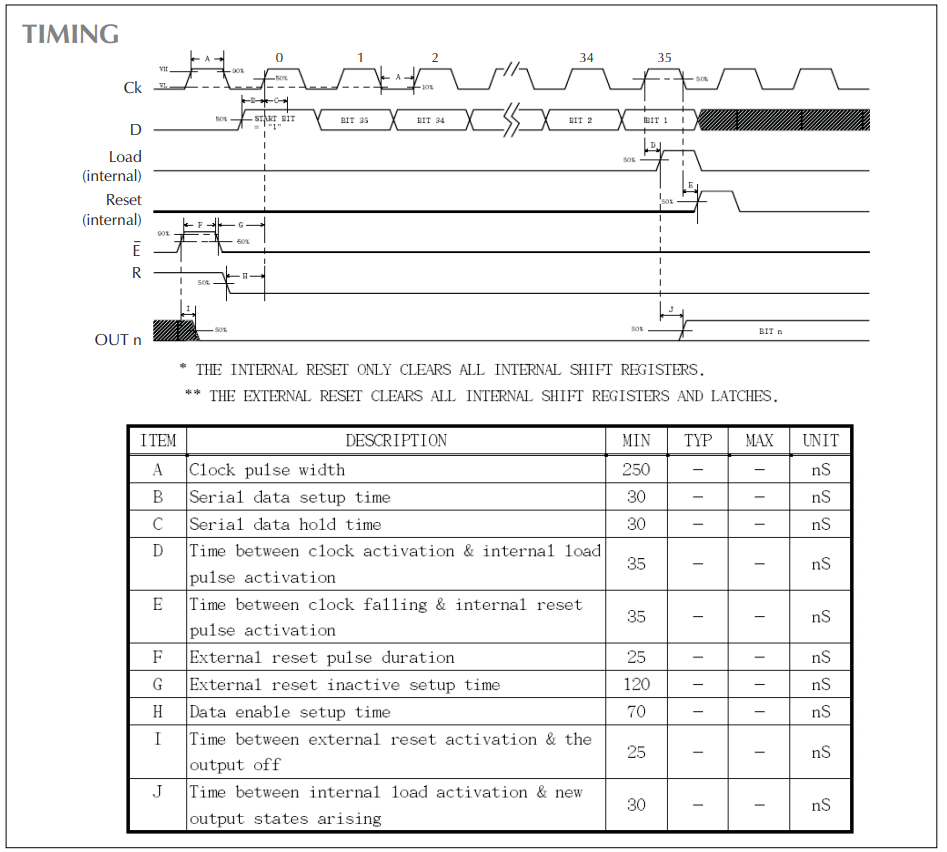
We can now see in much more detail that, yes indeed, the display is based around an internal shift register architecture, with bits being clocked in and held in the device. We can see that there's a start bit ("1") and the 35 data bits we saw in the EM32's datasheet, so we'll need to clock 36 physical bits into the device, whereupon it will automatically load the data (presumably into the data latches and output buffer). Then in 30 ns it will automatically reset and be ready The clock timing, which is listed as 500 Khz nominal, can in theory be pushed to 2 MHz if the 500 ns cycle time (250 ns + 250 ns) can be believed. (Not that we're hoping it's that high). We can also get some detail about the external reset signals and the data input timing.
Remember, all this sleuthing is with a goal - not of driving an EM32, but of creating a display controller which takes the place of an EM32 in a specific installation. Any details we can deduce from the datasheets will help us narrow down where we begin with our investigation of the controller itself.
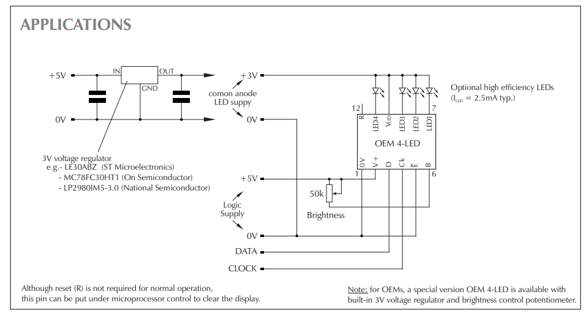
The "applications" diagram gives us a few pointers - not all are useful to our goal, but are interesting nonetheless. As we guessed before, the LED1 through LED4 pins are open collector drivers - but unlike our guess, we actually need to provide the +3 volts for that control from an external regulator, not from the VLED pin. And the typical current should be 2.5mA per LED, so there's aren't high-current drivers in any sense. We can also see that the OEM-4 module has an option for external brightness control via a 50kΩ potentiometer, but we don't have the ability to access those pins on the EM32 unit.
There's also a sneaky note at the bottom of the diagram that there is a 'special version' OEM-4 LED with a built-in 3V regulator and brightness control. I wonder which version we have?
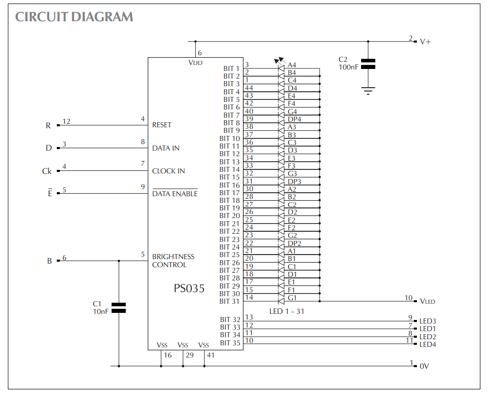
At first blush the circuit diagram appears to tell us what we already know - there's a shift-register LED driver inside this thing that's taking clocked data in and driving LEDs on the downstream side. But there are actually two key things to note here - while I had assumed the VLED pin was only for the external LED's, it's actually the anode connection for all the segments of the display! This means that connecting it isn't optional for driving external LEDs, it's mandatory if we want the OEM-4 to work. Looking back at the block diagram from the EM32, we can understand the purpose of the built-in regulator shown there.
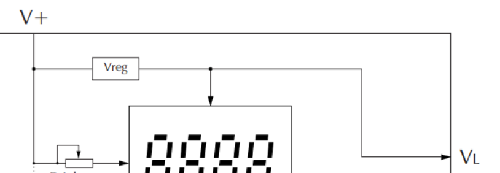
The EM32's built-in 3V regulator on the EM32.
The second key thing we learn from the circuit diagram is which bits control which segments. But it's made even more clear in the final diagram from the OEM-4 datasheet: the serial data input sequence:
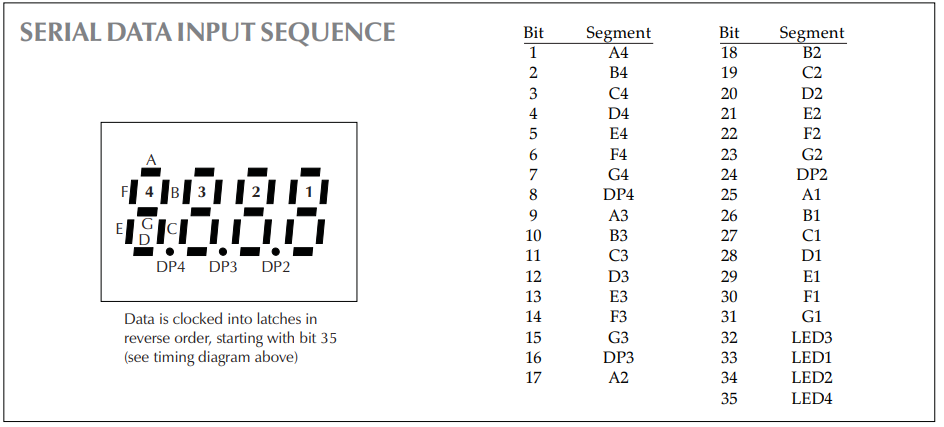
Now we don't have to try to deducing the bit-order from what we think the data stream is displaying, we can build that data into our programming from the beginning. Thank goodness, since I'd never actually seen this display in action before I undertook the task to replace it!
This is about as deep as the research rabbit-hole goes, it seems. We've found the datasheet for the EM32 module itself, the OEM-4 module inside it, and the PS035 inside that.
In the next post, we'll start probing the signals coming from the controller, building a version of the display in software, and testing some theories about how the display operates.